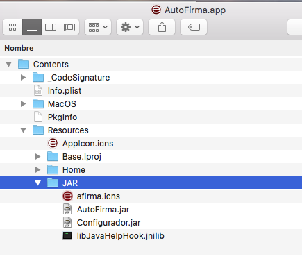
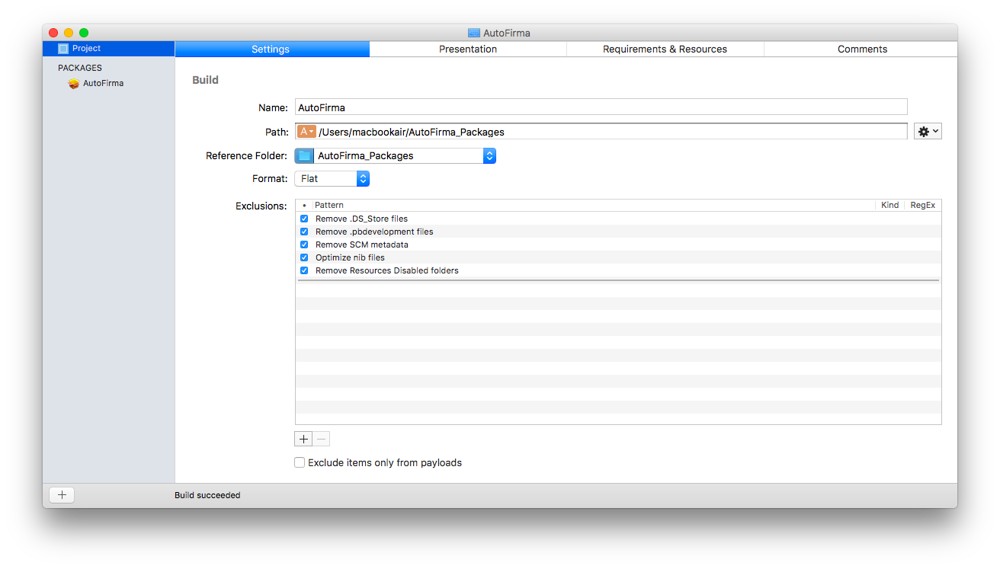
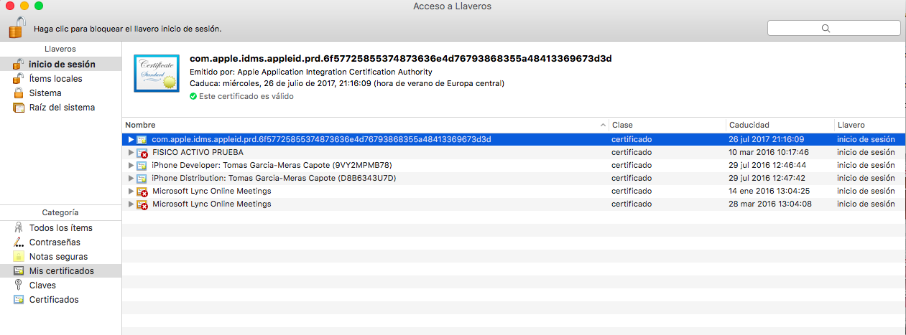
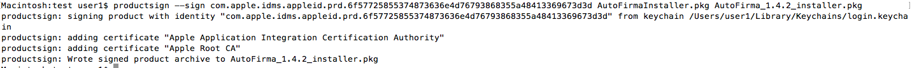

El proceso de generación de un instalador .pkg de la aplicación AutoFirma consta de cuatro fases principales. Una primera en la que se prepara un directorio .app con los ficheros necesarios para realizar la instalación. Posteriormente este directorio debe ser firmado. En la tercera fase se genera el fichero .pkg a partir del directorio .app firmado anteriormente. Por último se firma el fichero .pkg generado.
Para realizar las firmas es preferible que se realice con un certificado para firmar código expedido por Apple.
Generando la estructura de directorios y los scripts de pre y post instalación.
La estructura de carpetas para generación el instalador es la siguiente:
-
AutoFirma.app. Es la aplicación AutoFirma. En realidad, esta aplicación es una estructura de directorios con una organización concreta.
-
scripts: Es la carpeta que contiene el script de postinstalación.
La estructura de carpetas para el empaquetado ya incluye todos los ficheros necesarios para el empaquetado del producto a excepción de los JAR de AutoFirma y el configurador.
Para incluir estos ficheros debemos hacer clic en el fichero AutoFirma.app con el botón secundario del ratón (o con el botón primario y la tecla Control pulsada) y seleccionar “Mostar el contenido del paquete”. Los JAR se deberán almacenar en el directorio /Contents/Resources/JAR con los nombres “AutoFirma.jar” y “AutoFirmaConfigurador.jar”, respectivamente.
El contenido del directorio “AutoFirma.app” debería quedar así:
<
IMPORTANTE: Es importante tener en cuenta al instalar AutoFirma que, si existe una versión anterior ya instalada, la aplicación se instalará en la misma ruta que esta y no en la carpeta Aplicaciones.
Actualización de la JRE
Si se desea actualizar la versión de Java incluida en el paquete de instalación, se puede eliminar el contenido del directorio /Contents/Resources/Home y reemplazarlo por el directorio “Home” de la JRE que desee incluir. Se recomienda reducir el tamaño del JRE eliminando componentes que no utilice AutoFirma (como las extensiones y bibliotecas de JavaFX, por ejemplo). A continuación:
-
Hay que realizar una copia del ejecutable “java” en el mismo directorio, y cambiarles el nombre al fichero original y a la copia para llamarlos:
-
AutoFirma -> Se encargará de ejecutar AutoFirma.jar
-
ejecutar -> Se encargará de ejecutar AutoFirmaConfigurador.jar
-
No puede haber un fichero que se llame java
-
Se debe copiar al directorio “bin”, donde se encuentran los de ejecutables de Java, las bibliotecas “libnss3.dylib”, “libmozglue.dylib” y “libsoftokn3.dylib” que vienen con Firefox. Esto es necesario porque será en este directorio en donde busque Java estas bibliotecas cuando intente acceder al almacén de certificados de Firefox.
-
Se debe introducir en el almacén de confianza de la nueva JRE los certificados de las autoridades de certificación que se deseen. Para facilitar esta tarea, se provee del script “insert_certs.sh”. Este script deberá localizarse en el directorio de los certificados a insertar y deberán reajustarse en el script las rutas de la JRE a la que se le desean agregar los certificados.
Generar el fichero .pkg en OS X
Para la generación del instalador de AutoFirma se presentan 2 alternativas.
Generación mediante packages
La aplicación packages nos permite empaquetar una aplicación, configurando aspectos que no es posible configurar mediante la herramienta pkgbuild (que se presenta más adelante). La estructura de empaquetado ya incluye un proyecto de packages, llamado AutoFirma.pkgproj, situado junto a “AutoFirma.app” y el directorio “scripts”, a los que hace referencia.
Para la generación del paquete, primeramente, se deberá abrir el proyecto “AutoFirma.pkgproj”. La aplicación packages se nos presentará con una apariencia similar a la siguiente:
<
En caso de que fuese necesario (por haber copiado el proyecto), se deberán corregir las referencias a los directorios “AutoFirma.app” y “scripts”.
Para construir el proyecto basta con acceder al menú “Build” y pulsar en la opción “Build” (Command+B).
El paquete se creará con el nombre “AutoFirma.pkg” en el mismo directorio que el fichero de proyecto.
Generación por línea de comandos
Hay que ejecutar el comando pkgbuild con los siguientes parámetros:
pkgbuild --install-location <installation-path> --scripts <scripts-path> --component <component-path> <package-output-path>
-
installation-path: Ruta donde se instalará el paquete, la ruta habitual suele ser: /Applications
-
scripts-path: Ruta donde se encuentra la carpeta con los scripts.
-
component-path: Ruta del fichero .app que se añade al instalador. En nuestro caso “Cliente @firma para OS X.app”
-
package-output-path: Ruta donde se generará el instalador .pkg. En nuestro caso AutoFirmaInstaller.pkg
Si todo ha ocurrido sin problemas se mostrarán los siguientes mensajes:
Pkgbuild: Adding component at component-path
Pkgbuild: Addig top-level postinstall script (si hay preinstall script aparecerá un mensaje análogo)
Pkgbuild: Wrote package to package-output-path
El fichero .pkg se habrá generado y se podrá ejecutar haciendo doble clic.
Si no sale el mensaje “Adding top-level … script” quiere decir que no ha reconocido el script de postinstalación, repasa el punto 2.
Para una información más detallada sobre el comando pkgbuild y sus parámetros consultar la ayuda de Apple:
https://developer.apple.com/library/mac/documentation/Darwin/Reference/ManPages/man1/pkgbuild.1.html
Firmar el fichero .pkg en OS X
Para firmar el fichero .pkg es necesario un certificado de desarrollador expedido por Apple válido para la distribución de aplicaciones OS X (consulte con Apple para más información).
Hay que ejecutar el siguiente comando:
productsign –sign <Nombre certificado> <original.pkg> <firmado.pkg>
-
Nombre certificado: Nombre del certificado tal como aparece en el llavero de OS X (podemos observarlo en la siguiente imagen).
-
original.pkg: Nombre del fichero .pkg que queremos firmar.
-
firmado.pkg: Nombre del .pkg firmado (No tiene por qué ser el mismo nombre que el original).
<
Ejemplo:
productsign –sign com.apple.idms.appleid.prd.6f5772585537487363e4d76793868355a48413369673d3d ./Desktop/test/”Cliente @firma para OS X.pkg” AutoFirma_1.5.pkg
Si todo ha ocurrido sin problemas se mostrarán los siguientes mensajes:
productsign: adding certificate “Apple Application Integration Certification Authority”
productsign: adding certificate “Apple Root CA”
productsign: Wrote signed_product archive to AutoFirma_1.5_installer.pkg
Tal como vemos en la siguiente imagen:
<
Para una información más detallada sobre el comando productsign y sus parámetros consultar la ayuda de Apple: